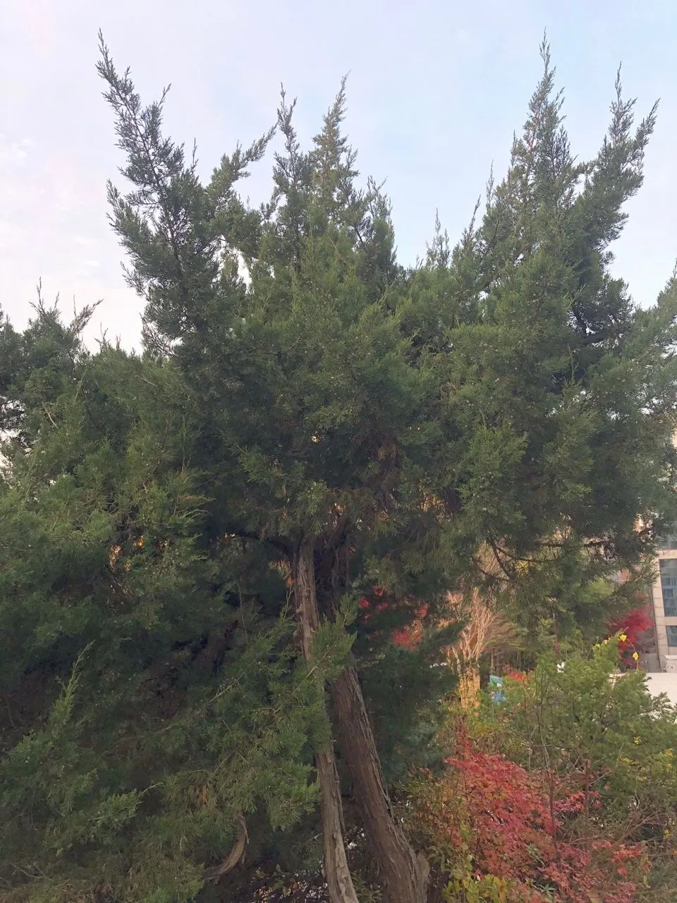

Gallery

Details
- 학명: Juniperus chinensis
- 분류: 측백나무과 향나무속
- 원산지: 몽골, 중국, 일본, 러시아 남동부
- 형태적 특징:
- 높이: 15~25m
- 나무껍질:
- 회갈색, 흑갈색, 적갈색
- 잎:
- 바늘잎과 비늘잎 공존
- 어린 가지: 따가운 바늘잎
- 묵은 가지: 부드러운 비늘잎
- 생태적 특징:
- 사계절 푸른 상록 침엽수
- 곁뿌리 많아 메마른 땅에서도 생존
- 공해에 강하고 이식에 잘 견딤
- 용도:
- 조경수
- 고급 가구재
- 전통 건축재
- 한방 및 약용
- 천연 방충제
- 변종:
- 가이즈카향나무
- 뚝향나무
- 섬향나무
- 둥근향나무
- 은반향나무
- 금반향나무
- 건강상 이점:
- 항균 작용
- 스트레스 해소
- 면역력 강화
- 호흡기 건강 개선
Location
서울대학교